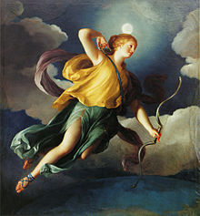

Artemisa
Introducción
Artemisa o Diana en la mitología romana, es la diosa de la caza, los animales salvajes, el terreno virgen, los nacimientos, la virginidad y las doncellas, que traía y aliviaba las enfermedades de las mujeres. Representaba a la Luna. Hermana melliza de Apolo, por lo tanto, hija de Zeus y Leto. Todas sus acompañantes debían permanecer vírgenes bajo pena de implacables castigos, y la propia Artemisa guardó celosamente su castidad. Despertó el interés de muchos dioses y hombres, pero ninguno de ellos logró ganar su corazón. Sus símbolos incluían el arco y las flechas de plata, el perro de caza, el ciervo y la Luna. El carro de Artemisa estaba hecho de oro y era tirado por cuatro ciervos de cornamenta dorada. Sus bridas también eran de oro.


Nacimiento
Cuando Hera descubrió que Leto estaba embarazada de Zeus, prohibió que diera a luz en tierra firme, ya sea en continente o cualquier isla del mar. Retuvo a Ilitía
para que no fuera a socorrerla. Además, envió a la temible serpiente Pitón para que asesinara a Leto en el trance del parto. Pero Zeus envió al viento Bóreas para que recogiera a Leto y la llevara junto
a Poseidón.


Este la llevó a su vez a la recién creada isla flotante de Ortigia, que no era continente ni una isla real, y cubrió el lugar con una bóveda formada por sus olas. Allí, sin contravenir la
prohibición de Hera, los demás dioses presentes en el nacimiento en Delos enviaron a Iris para que trajese a Ilitía. En cuanto la diosa puso un pie en la isla, Leto, aferrada a un olivo, alumbró a
Artemisa, quien inmediatamente ayudó a Apolo a venir al mundo. Más tarde, la isla de Ortigia fue llamada Delos y Zeus la aseguró al fondo del Océano. Recién nacidos, Apolo y Artemisa que tenían grandes
habilidades de cazadores, mataron a la Pitón que se disponía a atacarlos.
Algunos mitos
Orión
Tras abandonar a Eos, Orión se convirtió en un compañero de caza de Artemisa. Apolo estaba celoso porque su hermana ya no le prestaba atención y también creía que
Orión abandonaría a su hermana como lo hizo con Eos. Por ello tramó un ardid para que Orión muriera.
Explicó a Gea la vanidad del cazador y ésta envió un escorpión contra él. Orión trató de escapar nadando
hacia la isla de Delos, donde esperaba que Eos lo protegiera, y entonces Apolo desafió a Artemisa a disparar sus flechas contra lo que se alejaba nadando tras acusarle de haber seducido a Opis, una de las
doncellas de Artemisa. Artemisa disparó sus flechas y lo mató. Tras ello, descubrió que se trataba de Orión y por no poder hacerlo revivir, lo colocó entre las estrellas como la constelación homónima.
El Jabalí de Calidón
El rey Eneo de Calidón, celebraba sacrificios anuales en honor de los dioses. Un año el rey olvidó incluir a Artemisa en sus ofrendas. Ofendida, Artemisa soltó al jabalí más grande y feroz imaginable en los alrededores de Calidón, que se comportó como un loco por toda la campiña, destrozando viñedos y cosechas, obligando a la gente a refugiarse dentro de las murallas de la ciudad, donde empezaron a morirse de hambre. Eneo envió mensajeros a buscar a los mejores cazadores de Grecia, ofreciéndoles la piel y los colmillos del jabalí como premio. Atalanta fue la única mujer que participó de esta cacería.